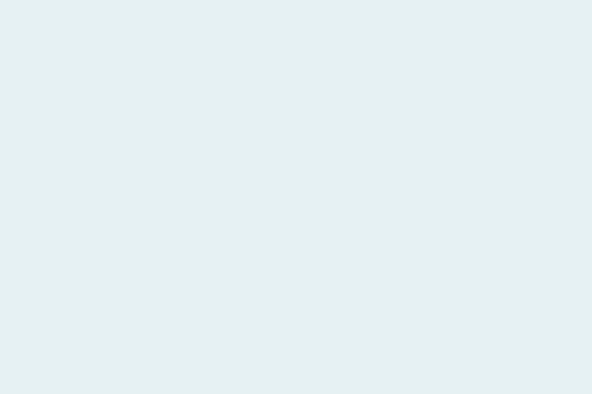

Movimento com orientação para o seu dia a dia
Atendimento em fisioterapia e pilates em Divinópolis. A avaliação considera sua rotina, seus sintomas e o que você precisa retomar.
O que está incomodando?
Agendar avaliaçãoEscolha um horário e a mensagem já vai pronta para o WhatsApp.

Serviços
- Primeiro horário com agendamento
Avaliação fisioterapêutica
Conversa sobre histórico, sintomas e avaliação do movimento para orientar o atendimento.
- Plano definido após avaliação
Fisioterapia para coluna
Atendimento individual para queixas lombares e cervicais, conforme avaliação.
- Traga exames e encaminhamento, se houver
Reabilitação de joelho
Exercícios e acompanhamento funcional para diferentes queixas no joelho.
- Agendamento após liberação médica
Fisioterapia pós-operatória
Sessões conforme cirurgia, liberação e orientação da equipe responsável.
- Sessão com horário marcado
Pilates individual
Exercícios orientados em aparelhos, com atenção ao movimento e à postura.
Atendimento pensado para cada pessoa
Na Movimento, o atendimento começa com uma conversa e uma avaliação do movimento. A partir daí, a fisioterapeuta explica as possibilidades e combina os objetivos do acompanhamento.
A clínica atende dores e limitações funcionais, além de sessões de pilates. Traga exames e orientações médicas que já tenha recebido. CREFITO-4 000000-F.

Perguntas frequentes
Preciso de encaminhamento para começar?
Nem sempre. Se você já tem pedido ou relatório médico, traga para a avaliação.
O que devo vestir para a sessão?
Use roupa confortável que permita movimentar a região que será avaliada.
Quantas sessões vou precisar?
A quantidade depende da avaliação e da evolução. A fisioterapeuta conversa sobre isso durante o acompanhamento.
Vocês atendem após cirurgia?
Sim, com liberação e orientações da equipe médica responsável pelo procedimento.
Fale com a gente
Rua Goiás, 1.078, Centro, Divinópolis - MG
Divinópolis, MG
- Seg a sex: 7h às 19h
- Sáb: 8h às 12h
WhatsApp (37) 90000-0000
Telefone (37) 90000-0000
contato@exemplo.com.br